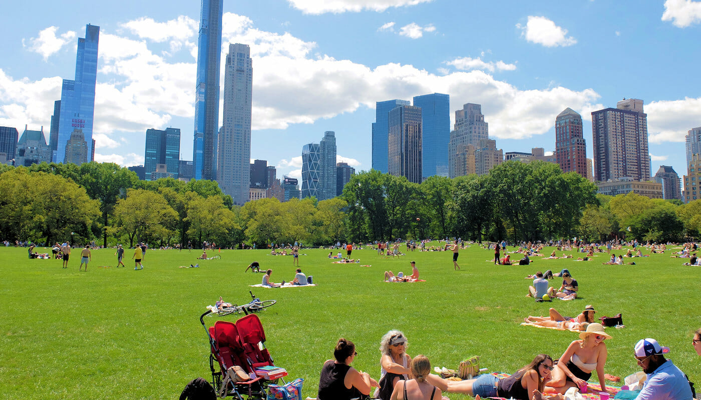

Parken
Gåsebäck, en stadsdel länge associerad med industri, streetart, och som platsen där du byter däck på din bil. Men vi på Thoren Innovation School har en vision för Gåsebäck. Vi tror att grönska hade tillfört en ny anda i den gamla stadsdelen, och att en fin park kan skapa gemenskap för de som letar efter en ny plats att flytta till. Komplementet till denna park är en hel sanering av de tidigare förorenade områden planerad, och nya fräscha lägenheter ska ersätta gamla förfallna. Gåsebäck brandstation ska även bli en symbol för platsen, som en yta där kultur kan frodas och kreativiteten som låg bakom streetartparadiset som Gåsebäck varit åter få se rampljuset.
Utvecklingen av Gåsebäck är en viktig del i stadsförnyelseprojektet H+. Men det är inget vi kan göra själva. Därför har vi tillsammans med Helsingborg Stad tagit hjälp med att guida oss i rätt riktning och bidra med sin energi och sina idéer. Med hjälp av workshops och medborgardialog ser vi till att Gåsebäck utvecklas på rätt sätt, för att tillgodose behoven som finns i området. Vi skapar framtidens Gåsebäck tillsammans!
Själva parken är det huvudsakliga fokuset under vårt projekt, med tanken om att det är fint att bo och leva i Gåsebäck kommer det locka de som letar efter en ny plats att bo på. Parken kommer bestå av stora grönområden, som binder samman stadsområdet med ett flertal cykel- och gångbanor. Vi vill koppla samman området med hjälp av parken, då vi vill värna om våra invånares både fysiska, psykiska, och sociala hälsa genom att skapa en fin plats att umgås på.
